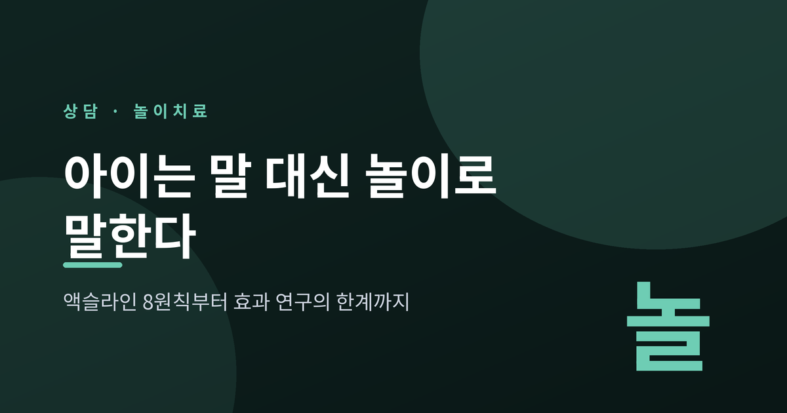
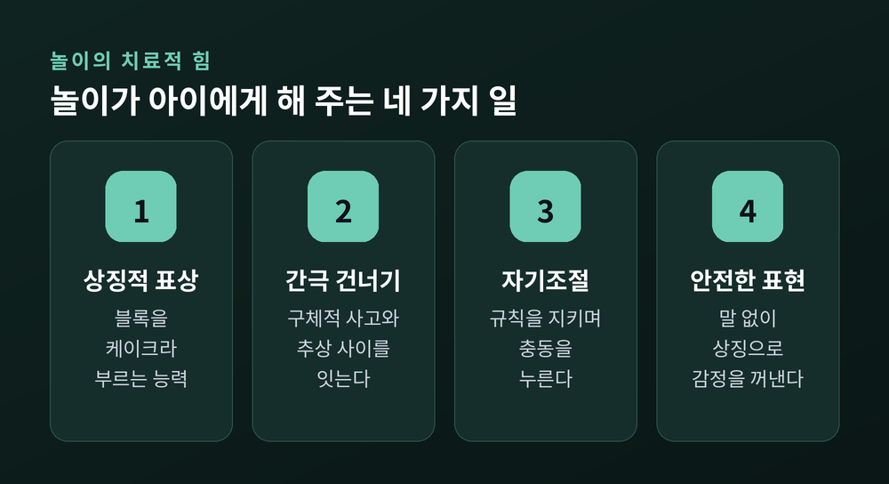
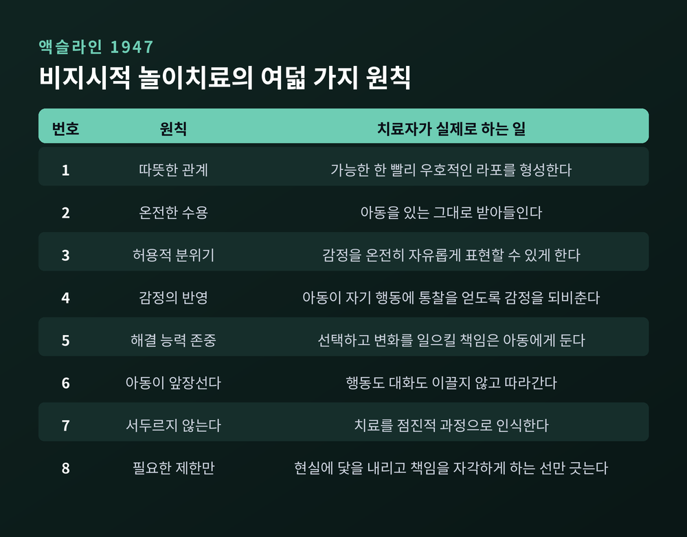
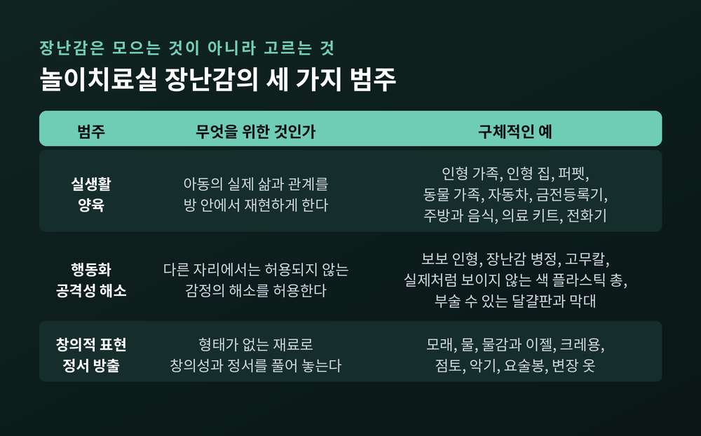
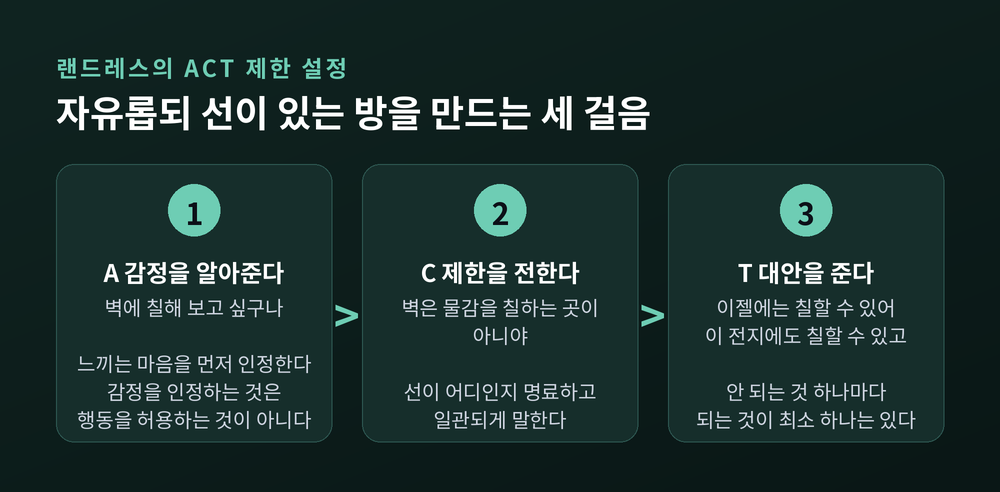
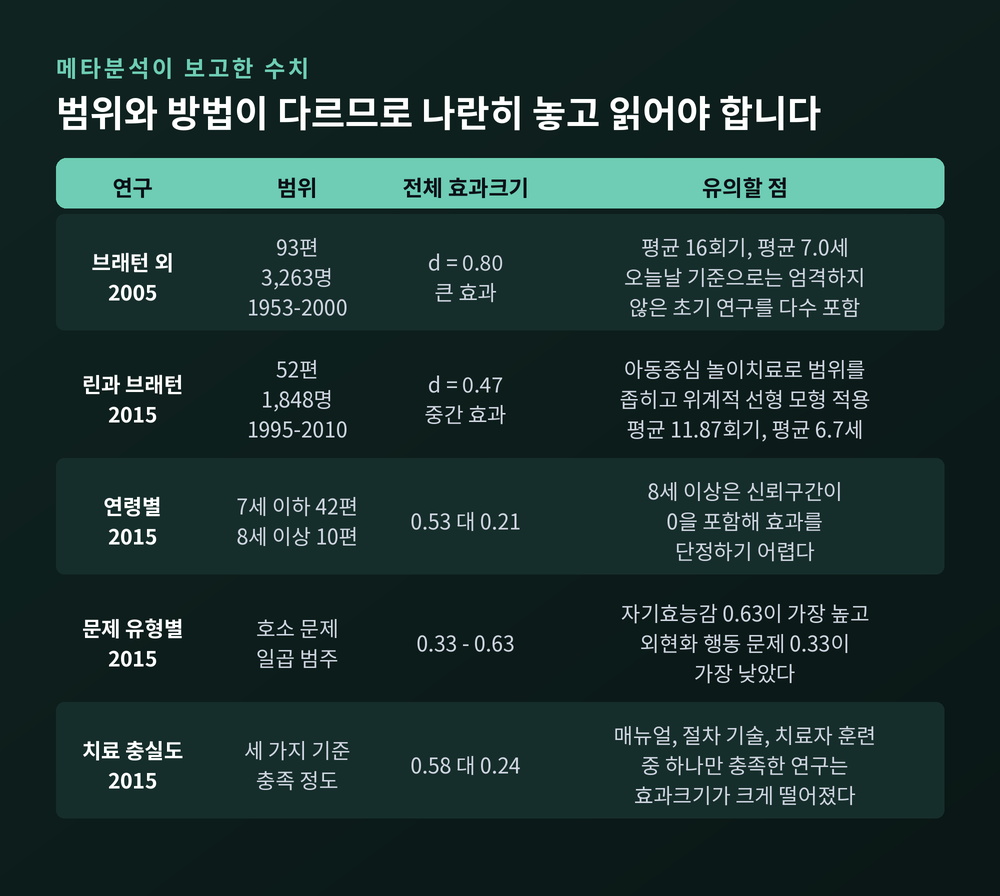
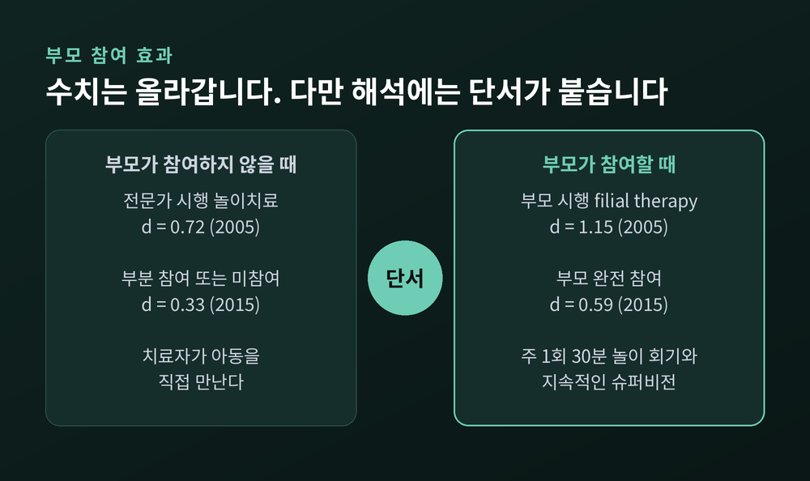

놀이치료 원리, 아이가 말 대신 놀이로 마음을 여는 이유

이번 글에서는 놀이치료가 어떤 원리로 작동하는지 정리해 보겠습니다. 액슬라인의 여덟 가지 원칙부터 발달심리학적 근거, 치료실 구성, 부모 참여, 그리고 효과 연구와 그 한계까지 차례로 살펴보겠습니다.
먼저 세 줄로 요약하면 이렇습니다. 어린 아이는 언어라는 추상적 수단으로 자기 경험을 온전히 전달할 인지적 준비가 아직 되어 있지 않습니다. 놀이는 그 자리를 대신하는 아이의 자연 언어입니다. 메타분석은 놀이치료의 효과를 지지하지만, 그 수치는 조건에 따라 크게 달라집니다.
아이는 왜 말로 하지 못하는가
미국놀이치료학회는 놀이치료를 "훈련받은 놀이치료사가 놀이의 치료적 힘을 활용해 내담자가 심리사회적 어려움을 예방하거나 해결하도록 돕는, 발달적으로 민감한 치료 양식"으로 정의합니다.
여기서 중요한 것은 '발달적으로 민감한'이라는 표현입니다.
브래턴 연구진의 메타분석 요약문은 이유를 분명히 적어 두었습니다. 아동은 추상적 수단인 언어를 통해 자신의 생각과 감정과 경험을 의미 있게 전달할 인지적 능력이 아직 부족하다는 것입니다. 장난감과 미술 재료 같은 구체적 사물은 아이에게 연령에 맞고 정서적으로 안전한 표현 수단이 되어 줍니다.
린과 브래턴은 2015년 논문에서 같은 이야기를 다른 각도로 풀었습니다. 어린 아이는 세계를 구체적으로 보기 때문에 복잡한 사고와 감정을 말만으로 표현하기 어렵습니다. 놀이는 구체적 사고와 추상적 사고 사이의 간극을 건너게 해 주는 다리라는 것입니다.
어른의 상담이 말로 진행되는 것은 어른에게 말이 가장 익숙한 도구이기 때문입니다. 아이에게 가장 익숙한 도구는 놀이입니다. 도구를 바꾼 것이지, 치료의 본질을 낮춘 것이 아닙니다.

상징놀이가 실제로 하는 일
발달심리학은 오래전부터 놀이를 진지하게 다뤄 왔습니다.
피아제는 아이가 블록을 케이크라고 가장하는 순간에 주목했습니다. 그 순간 아이는 상징적 표상 능력을 드러냅니다. 눈앞의 사물이 다른 무엇을 대신할 수 있다는 것을 아는 능력입니다. 인형 집 안에서 아기 인형을 구석에 두고 나머지 가족을 식탁에 앉히는 장면을 떠올려 보시면 됩니다. 아이는 한 마디도 하지 않고 무언가를 말한 셈입니다.
비고츠키는 가장놀이를 더 좁게 정의했습니다. 상상 상황을 만들고, 역할을 배정해 연기하고, 그 역할에 따른 규칙을 지키는 것. 이 세 가지가 모두 있어야 놀이라고 보았습니다.
주목할 대목은 세 번째입니다. 규칙을 지킨다는 것은 충동을 누른다는 뜻입니다. 비고츠키는 아이가 놀이 안에서 환상 상황을 만들어 자기 욕구를 다루고, 정서를 조절하고, 만족을 지연시키는 법을 배운다고 보았습니다. 자기조절 훈련이 놀이 안에서 자연스럽게 일어나는 것입니다.
비고츠키는 놀이가 아이를 근접발달영역의 상단에서 기능하게 하는 비계 역할을 한다고도 했습니다. 혼자서는 아직 못 하지만 숙련된 타인의 도움을 받으면 가능해지는 영역입니다. 그리고 그 '숙련된 타인' 자리에 성인이 들어갈 수 있다는 점을 인정했습니다.
놀이치료사가 앉아 있는 자리가 바로 거기입니다.
액슬라인의 여덟 가지 원칙
버지니아 액슬라인은 1947년, 칼 로저스의 인간중심 이론을 아동 상담에 처음 적용하고 이를 비지시적 놀이치료라고 이름 붙였습니다. 이후 무스타카스, 거니, 랜드레스를 거치며 발전해 오늘날 북미에서는 아동중심 놀이치료로 불립니다.
액슬라인의 여덟 원칙은 기법 목록이 아닙니다. 치료자가 회기 안에서 아이와 어떻게 존재하고 관계 맺는지에 관한 철학입니다.

여덟 개 중에서도 다섯 번째와 여섯 번째가 이 접근의 성격을 가장 잘 드러냅니다. 기회만 주어진다면 아이가 스스로 자기 문제를 해결할 능력이 있음을 깊이 존중한다는 것. 그리고 아이가 앞장서고 치료자는 따라간다는 것.
이것을 다른 모델과 구분짓는 것은, 린과 브래턴의 표현을 빌리면 "아동이 본래적으로 성장과 성숙을 향해 나아가며 스스로 치유를 방향 잡을 능력이 있다는 확고한 믿음"입니다.
일곱 번째 원칙도 눈여겨볼 만합니다. 치료를 서두르지 않는다는 것. 부모 입장에서 가장 견디기 어려운 대목이기도 합니다.
놀이치료실은 왜 그렇게 생겼을까
놀이치료실에 처음 들어가면 장난감이 그저 많아 보입니다. 그러나 랜드레스의 원칙은 정반대입니다.
"장난감과 재료는 수집되는 것이 아니라 선택되는 것이다."
노스텍사스대 놀이치료센터는 선택 기준을 구체적으로 공개하고 있습니다. 장난감은 표현의 선택지에 다양성을 제공해야 하고, 내구성이 있어야 하며, 복잡하지 않아야 합니다. 제한에 대한 현실 검증이 가능해야 하고, 긍정적 자기상과 자기통제의 발달을 허용해야 합니다. 무엇보다 언어화 없이 상징적으로 욕구를 표현할 수 있어야 합니다.
장난감은 크게 세 범주로 나뉩니다.

두 번째 범주가 특히 흥미롭습니다. 보보 인형, 장난감 병정, 고무칼처럼 공격성을 해소하는 물건들입니다. 여기에는 실제처럼 보이지 않는 색 플라스틱 총도 포함됩니다. 덜 눈에 띄지만 중요한 것으로 부술 수 있는 달걀판과 아이스크림 막대도 있습니다.
다른 장면에서는 허용되지 않는 감정을, 이 방 안에서는 안전하게 꺼내 볼 수 있게 하려는 것입니다.
공간 자체에도 기준이 있습니다. 질서 있고 예측 가능할 것, 그러면서 어질러짐을 허용하고 정리가 쉬울 것. 센터는 이를 두고 "특히 고통받고 외상을 겪은 아동에게 매우 중요하다"고 적었습니다.
자유롭되 제한이 있는 방
허용적이라는 말이 무엇이든 해도 된다는 뜻은 아닙니다. 액슬라인의 여덟 번째 원칙은 치료를 현실에 닻 내리게 하고 아이가 관계 안에서 자기 책임을 자각하게 하는 데 필요한 제한만을 설정한다고 말합니다.
랜드레스는 이것을 ACT라는 세 걸음으로 정리했습니다.

아이가 벽에 물감을 칠하려 할 때를 예로 들어 보겠습니다. 먼저 감정을 알아줍니다. "벽에 칠해 보고 싶구나." 다음으로 제한을 전합니다. "벽은 물감을 칠하는 곳이 아니야." 마지막으로 대안을 줍니다. "이젤에는 칠할 수 있어. 이 전지에도 칠할 수 있고."
감정을 인정하는 것과 행동을 허용하는 것은 다릅니다. 아이는 자기가 보이고 있다고 느끼면서, 동시에 선이 어디인지도 배웁니다. 안 되는 것 하나마다 되는 것이 최소한 하나는 있다는 원칙입니다.
부모가 치료실 안으로 들어올 때
1964년 버나드 거니는 조금 다른 발상을 내놓았습니다. 아이를 치료실로 데려오는 대신, 부모에게 놀이치료의 기본 원리와 기술을 가르치자는 것이었습니다. 부모-자녀 놀이치료, 곧 filial therapy의 출발입니다.
형태는 단순합니다. 부모는 자녀와 주 1회 30분 놀이 회기를 갖습니다. 그 시간 동안 부모는 지시하지 않고 아이를 따라갑니다. 그리고 그 과정 내내 훈련된 놀이치료사로부터 지속적인 훈련과 직접적인 슈퍼비전을 받습니다.
랜드레스와 브래턴은 이를 10회기 모델로 표준화했습니다. 부모-자녀 관계치료, CPRT입니다. 부모 다섯에서 여덟 명 규모의 집단으로 주 1회 두 시간씩 열 번 진행합니다.
CPRT의 전제는 한 문장으로 요약됩니다. 안전한 부모-자녀 관계가 아이의 안녕에 필수적인 요인이라는 것. 부모는 증상이 아니라 자녀의 저변 욕구에 조율하는 법을 배우고, 공감과 존중을 보이면서 문제 행동에 제한을 설정하는 법을 익힙니다.
참고로 CPRT와 아동중심 놀이치료 매뉴얼은 모두 한국어판이 나와 있습니다. 한국인 부모를 대상으로 한 연구도 2000년과 2003년에 각각 국제놀이치료저널에 실렸습니다.
연구는 무엇을 말하고 있나
놀이치료 분야에서 가장 널리 인용되는 수치는 2005년 브래턴 연구진의 메타분석입니다. 1953년부터 2000년까지의 통제된 결과 연구 93편, 대상자 3,263명, 평균 16회기, 평균 연령 7.0세.
전체 효과크기는 0.80이었습니다. 코헨의 기준으로 0.8은 큰 효과에 해당합니다.

10년 뒤 린과 브래턴은 아동중심 놀이치료에만 범위를 좁혀 다시 계산했습니다. 1995년부터 2010년까지 52편, 대상자 1,848명, 평균 11.87회기, 위계적 선형 모형 적용. 전체 효과크기는 0.47이었습니다. 중간 정도 효과입니다.
수치가 크게 달라 보이지만 어느 한쪽이 틀린 것은 아닙니다. 포함 기준이 다르고, 효과크기 계산 공식이 다르고, 평균 추정 방법론이 다릅니다. 두 번째 분석이 더 최근의, 더 엄격한 연구만 담았다는 차이도 있습니다.
두 분석이 공통으로 가리키는 대목은 따로 있습니다. 부모가 참여할 때 수치가 올라간다는 것입니다.

2005년 분석에서 부모만 시행한 filial therapy는 1.15, 전문가가 시행한 놀이치료는 0.72였습니다. 2015년 분석에서도 부모가 온전히 참여한 연구는 0.59, 부분 참여하거나 참여하지 않은 연구는 0.33이었습니다.
연령도 갈립니다. 7세 이하 집단은 0.53, 8세 이상 집단은 0.21이었습니다.
가장 큰 차이를 만든 변인은 뜻밖에도 인종이었습니다. 비백인 아동 비중이 높은 연구는 0.76, 백인 비중이 높은 연구는 0.33. 연구 간 분산의 19.1퍼센트를 설명하는, 단일 조절변인 중 가장 큰 비중이었습니다. 저자들은 놀이가 언어와 사회정치적 장벽과 문화적 장벽을 넘어선다는 점을 이유로 들며, 놀이치료를 문화적으로 반응적인 개입으로 평가했습니다.
그리고 연구가 말하지 않는 것
좋은 수치만 옮기면 그 글은 광고가 됩니다. 한계도 같이 봐야 합니다.
먼저 부모 참여 효과입니다. 2005년 분석의 저자들 스스로 부풀림 가능성을 인정했습니다. 많은 연구에서 부모가 치료 제공자이면서 동시에 자녀의 행동을 평정하는 자료원이었습니다. 측정하는 사람과 치료하는 사람이 같았다는 뜻입니다.
2015년 분석은 여기서 한 걸음 더 나갑니다. 호소 문제와 연령과 인종을 통제한 최종 모형에서는 부모 참여에 따른 차이가 크게 줄어 통계적 유의성이 사라졌습니다. 저자들은 문장 하나를 분명하게 남겨 두었습니다. 양육자를 온전히 참여시키는 개입이 치료자가 제공하는 전통적 개입을 완전히 대체해서는 안 된다는 것입니다.
표본 문제도 있습니다. 수집된 52편 중 22편이 총 참가자 30명 미만이었고, 각 처치 집단에 30명 이상을 둔 연구는 단 다섯 편뿐이었습니다. 저자들은 대부분의 연구가 작은 표본에 발목 잡혀 검정력과 일반화가 제한된다고 적었습니다.
적용 범위도 무한하지 않습니다. 아동중심 놀이치료는 대체로 3세에서 10세를 대상으로 합니다. 8세 이상 집단의 효과크기는 0.21이었고 신뢰구간이 0을 포함했습니다. 효과가 있다고 단정하기 어렵다는 뜻입니다.
문제 유형에 따라서도 갈립니다. 외현화 문제, 곧 밖으로 드러나는 행동 문제의 효과크기가 0.33으로 가장 낮았습니다.
자폐 스펙트럼 아동을 대상으로 한 놀이 기반 개입의 체계적 문헌고찰은 혼재된 결과를 보고합니다. 사회적 상호작용과 의사소통에서는 개선이 관찰되었지만, 제한적이고 반복적인 행동에서는 유의한 결과가 없었습니다. 연구 참가자가 대부분 어리고 남아이며 언어 능력이 있는 쪽에 몰려 있다는 점도 지적됩니다.
공신력 있는 평가 등급도 참고할 만합니다. 아동중심 놀이치료와 CPRT는 모두 미국 보건복지부 산하 클리어링하우스와 캘리포니아 증거기반 클리어링하우스에서 '유망한' 개입으로 지정되어 있습니다. 네 단계 등급 중 세 번째입니다. 효과가 인정되지만 최고 등급은 아니라는 뜻이지요.
마지막으로 충실도 문제가 있습니다. 매뉴얼 사용, 절차 기술, 치료자 훈련 기술이라는 세 기준 중 하나만 충족한 연구의 효과크기는 0.24로 떨어졌습니다. 노스텍사스대 센터도 일부 훈련은 증거 기반 모델대로 가르치지 않는다고 공개적으로 경고하고 있습니다. 같은 이름으로 불려도 안에서 벌어지는 일은 다를 수 있습니다.
정리하면 이렇습니다.
놀이치료는 말을 못 하는 아이를 위한 차선책이 아닙니다. 아이에게 가장 익숙한 언어로 자리를 옮긴 상담입니다. 액슬라인의 여덟 원칙은 기법이 아니라 태도였고, 치료실의 장난감은 모아 둔 것이 아니라 골라 둔 것이었습니다. 부모가 참여하면 수치는 올라가지만, 부모가 전문가를 대신할 수 있다는 뜻은 아니었습니다.
아직 모르는 것도 많습니다. 표본은 작고, 나이 많은 아이에 대한 근거는 얇고, 문제 유형에 따라 결과도 갈립니다. 이 글의 수치들은 어디까지나 집단 평균이며, 한 아이의 앞날을 예측하는 값이 아닙니다.
그러니 이 글은 판단의 근거가 아니라 이해의 실마리로 읽어 주시면 좋겠습니다. 아이의 어려움이 몇 주 넘게 이어지거나, 일상과 관계에 눈에 띄는 영향을 주고 있다면, 인터넷의 정보를 모으는 대신 아동상담 전문가나 소아청소년정신건강의학과 전문의와 직접 상담하시길 권합니다. 아이를 직접 만나 본 사람만이 할 수 있는 판단이 있습니다.
결국 이 접근이 기대는 것은 하나입니다.
"기회만 주어진다면, 아이는 스스로 길을 찾는다."
아이가 말을 하지 않아서 답답하셨다면, 어쩌면 아이는 이미 오래전부터 말하고 있었는지도 모릅니다. 다만 우리가 그 언어를 배우지 않았을 뿐입니다.